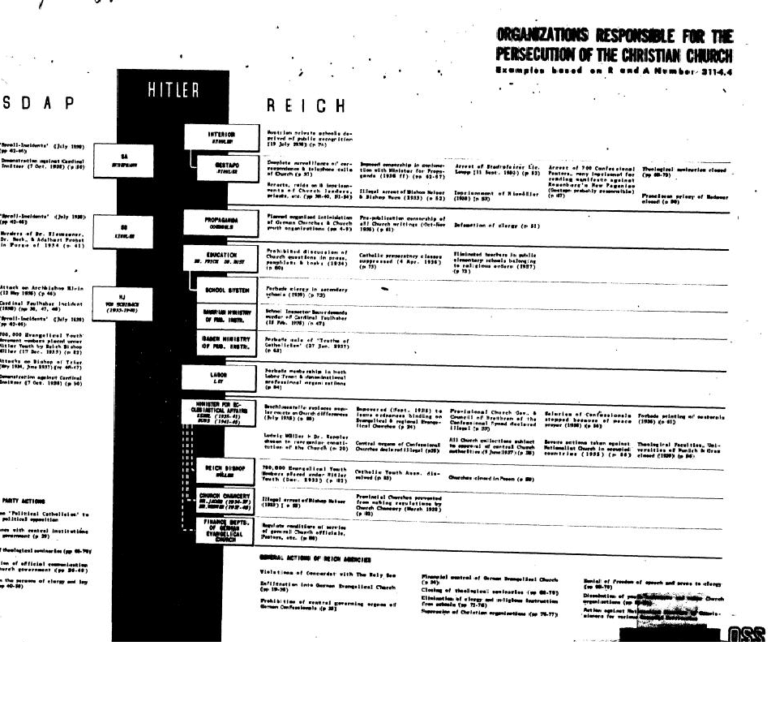

It became known from documents that the Rutgers Journal published that the National Socialist leadership did indeed have along term plan to remove the Christian program from Germany:
OFFICE OF STRATEGIC SERVICES
Contents: The Rutgers Journal of Law & Religion, produced by Rutgers University law students, has begun posting documents from the Nuremberg Project--a collection of trial transcripts, memoranda, and reports from the Nuremberg war crimes trials, preserved by William J. Donovan, assistant to the American chief prosecutor at the International Military Tribunal, and housed at the Cornell University Law Library
The documents have been scanned from typescript and are to be posted every 6 months, with additional scholarly commentary published "on a rolling basis." The first installment is a July 1945 report by the Office of Strategic Services, "The Nazi Master Plan: the Persecution of the Christian Churches," with commentary by two British scholars on the persecution of religion as a war crime. The report describes government interference in churches in Germany and countries under Nazi control, intimidation, and banning of certain denominations, and arrests and murders of clergy. Links to other relevant websites are planned for the future.
"The fragile, typewritten documents from the 1940s lay out the Nazi plan in grim detail," writes Philadelphia Inquirer reporter Edward Colimore: "Take over the churches from within, using party sympathizers. Discredit, jail or kill Christian leaders, and re-indoctrinate the congregants. Give them a new faith– in Germany's Third Reich."
Hitler made certain the church was well under his thumb and in support of his dogmas. One group of Nazi ideologues who had infiltrated German churches went by the mundane moniker, "German Christians," almost as if they were holding themselves aloft as the standard by which fellow Germans should judge true Christianity. They were no such thing, recommending as they did scrapping the entire Old Testament and including the insidious "Aryan Paragraph."
The ideologues prevailed, and the churches voted into their confessions the paragraph, which barred from the pastorate any Jewish converts or those married to Jews. The misnamed German Christians argued, in radical disagreement with the Scriptures, that Jews could not be saved. Their goal, in short, was to undermine the Scriptures and doctrinal standards in favor of Nazi propaganda. The party line was to become the 28th book of the New Testament, the Gospel according to Adolf.
"A lot of people will say, 'I didn't realize that they were trying to convert Christians to a Nazi philosophy,'" observed Julie Seltzer Mandel, editor of the Nuremberg Project for the Rutgers Journal of Law and Religion. "They were looking to eliminate Christianity."
"Important leaders of the National Socialist party would have liked to meet this situation [church influence] by complete extirpation of Christianity and the substitution of a purely racial religion," said one of the documents highlighted by the Nuremberg Project, a July 1945 report by the OSS [the wartime intelligence predecessor of the CIA]. The report further points to the "systematic nature of the persecution" as "the best evidence now available as to the existence of an anti-Church plan."
The report goes on to say, "Different steps in that persecution, such as the campaign for the suppression of denominational and youth organizations, the campaign against denominational schools, the defamation campaign against the clergy, started on the same day in the whole area of the Reich and were supported by the entire regimented press, by Nazi Party meetings, by traveling
party speakers." [1]
Quotes from US government documents [1946-47]:
1. Important leaders of the National Socialist party would have liked complete extirpation of Christianity and the substitution of a purely racial religion. [OSS Report, cited in BBC 2002].
2. The fragile, typewritten documents from the 1940s lay out the Nazi plan in grim detail: Take over the churches from within, using party sympathizers. Discredit, jail or kill Christian leaders. And re-indoctrinate the congregants. Give them a new faith– in Germany's Third Reich. [Colimore, 2002].
The original OSS report is available through:
The Political reality of dealing with the Catholic Church and how Hitler worked to dismantle its power within Germany:
The deal [Concordat] Hitler signed with the Catholic Church while on the surface was an uneasy alliance. The greater effect was it a purposely designed contract that officially declawed the power of the Roman Catholic Church in the political life of the new German system:
"On April 8 Hitler sent his vice chancellor Franz von Papen, a Catholic nobleman, founder of Kreuz und Adler [Cross and Eagle] - an association of wealthy Catholics, established to forge links between Catholicism and Nazism,- and former member of the Centre Party, to Rome, to offer negotiations about a Reichskonkordat, a nationwide concordat. On behalf of Cardinal Pacelli, Ludwig Kaas, the out-going chairman of the Centre Party, negotiated the draft of the terms with Papen."
"Throughout the years of the Weimar Republic, the National Socialists had always been a staunch opponent of such an agreement, but now Hitler intended to deal a decisive blow against Political Catholicism and at the same time gain international recognition of his fledgling regime."
"The Centre Party's chairman Kaas had arrived in Rome shortly before Papen; because of his expertise in Church-state relations, he was authorized by Cardinal Pacelli to negotiate terms with Papen, but pressure by the German government forced him to withdraw from visibly participating in the negotiations."
"The bishops saw a draft of the Reich Concordat on May 30, 1933 when they assembled for a joint meeting of the Fulda bishops conference, [led by Breslau's Cardinal Bertram], and the Bavarian bishops' conference, [whose president was Munich's Michael von Faulhaber]. Bishop Wilhelm Berning of Osnabruck, and Archbishop Conrad Grober of Freiburg - both admirers of Hitler - presented the document to the bishops].The strongest critics of the concordat were Cologne's Cardinal Karl Schulte and Eichstatt's Bishop Konrad von Preysing who pointed out that since the Enabling Act had established a dictatorship, the church lacked legal recourse if Hitler decided to disregard the concordat.[18] Notwithstanding, the bishops approved the draft and delegated Grober, a friend of Cardinal Pacelli and Monsignor Kaas, to present the episcopacy's concerns to Pacelli and Kaas. On June 3, the bishops issued a statement, drafted by Grober, that announced their support for the concordat.
Though the Vatican tried to hold back the exclusion of Catholic clergy and organisations from politics, it accepted the restriction to the religious and charitable field, which effectively meant acquiescing to end the Centre Party. During the concordat negotiations, Cardinal Pacelli had acquiesced in the party's dissolution but he was nonetheless dismayed that it occurred before the negotiations had been concluded. The day after government issued a law banning the founding of new political parties, thus turning the NSDAP into the party of the German state.
One of Hitler's key conditions for agreeing to the concordat, in violation to earlier promises, had been the dissolution of the Centre Party, which occurred on July 5
Article 16 required bishops to make an oath of loyalty to the state. Article 31 acknowledged that while the church would continue to sponsor charitable organisations, it would not support political organisations or social and political causes. Article 31 was supposed to be supplemented by a list of protected catholic agencies but this list was never agreed upon. Article 32 excluded clergy and the members of religious orders from political and social activities."[3]
The Growing Divide:
"In 1937, Orsenigo was invited along with the diplomatic corps to a reception for Hitler's birthday. Orsenigo again asked the Vatican if he should attend. Pacelli's reply was, "The Holy Father thinks not. Also because of the position of this Embassy, the Holy Father believes it is preferable in the present situation if your Excellency abstains from taking part in manifestations of homage toward the Lord Chancellor,"
"During Hitler's visit to Rome in 1938, Pius XI and Pacelli avoided meeting with him by leaving Rome a month early for the papal summer residence of Castel Gandolfo."
"The Vatican was closed, and the priests and religious brothers and sisters left in Rome were told not to participate in the festivities and celebrations surrounding Hitler's Visit. On the Feast of the Holy Cross, Pius XI said from Castel Gandolfo, "It saddens me to think that today in Rome the cross that is worshipped is not the Cross of our Saviour."
The Catholic Church attempts to undermine the National Socialist Government:
"The Catholic Church officially condemned the Nazi theory of racism in Germany in 1937 with the Encyclical "Mit Brennender Sorge", signed by Pope Pius XI. Smuggled into Germany to avoid prior censorship and read from the pulpits of all German Catholic churches, it condemned Nazi ideology [32] as "insane and arrogant." It denounced the Nazi myth of "blood and soil," decried neopaganism of Nazism, its war of annihilation against the Church, and even described the Führer himself as a 'mad prophet possessed of repulsive arrogance.'
"Although there is some difference of opinion as to the impact of the document, it is generally recognized as the "first ... official public document to criticize Nazism."
Hitler stated in response that "I shall open such a campaign against them [the Catholic clergy] in press, radio and cinema so that they won't know what hit them. Let us have no martyrs among the Catholic priests, it is more practical to show they are criminals."
This encyclical to the Nazis was "a call to battle against the Reich" and that Hitler was furious and "vowed revenge against the Church." [5]
"The Nazis were infuriated, and in retaliation closed and sealed all the presses that had printed it and took numerous vindictive measures against the Church, including staging a long series of immorality trials of the Catholic clergy. [6]
"The true extent of the Nazi fury at this encyclical was shown by the immediate measures taken in Germany to counter further propagation of the document. Not a word of it was printed in newspapers, and the following day the Secret Police visited the diocesan offices and confiscated every copy they could lay their hands on. All the presses which had printed it were closed and sealed. The bishops' diocesan magazines [Amtsblatter] were proscribed; and paper for church pamphlets or secretarial work was severely restricted. A host of other measures, such as diminishing the State grants to theology students and needy priests [agreed in the Concordat] were introduced." [7]
As part of this:
"On July 25, five days after the ratification of the concordat, the German government promulgated a sterilization law, which particularly offended the Catholic Church. Five days later the first steps were taken to dissolve the Catholic Youth League. During the next years, thousands of Catholic priests, nuns and lay leaders were arrested, many of them on charges of 'immorality' or 'smuggling foreign currency'." [9]
More:
Program points of the newly created National Reich Church headed by Rosenberg:
"The National Church is determined to exterminate irrevocably...the strange and foreign Christian faiths imported into Germany in the ill-omened year 800."
"The National Church has no scribes, pastors, chaplains or priests, but National Reich orators are to speak in them."
"The National Church demands immediate cessation of the publishing and dissemination of the Bible in Germany."
"On the altars there must be nothing but 'Mein Kampf' [to the German nation and therefore to God the most sacred book] and to the left of the altar a sword."
"On the day of its foundation, the Christian Cross must be removed from all churches, cathedrals and chapels and it must be superseded by the only unconquerable symbol, the swastika."
These points attack Christianity and one can observe the new Reich Church was a program designed to slowly phase out Christianity [even banning the publishing and dissemination of the Bible in Germany] while bringing people into pure National Socialism.
"Under the leadership of Rosenberg, Bormann and Himmler, who were backed by Hitler, the Nazi regime intended eventually to destroy Christianity in Germany, if it could, and substitute the old paganism of the early tribal Germanic gods and the new paganism of the Nazi extremists. As Bormann, one of the men closest to Hitler, said publicly in 1941, 'National Socialism and Christianity are irreconcilable.' [11]
"Any influence that would impair or damage the leadership of the people exercised by the Fuhrer with the aid of the NSDAP has to be eliminated. To an ever increasing degree the people must be wrested from Churches and their agents, the pastors. Only the Reich leadership, together with the party and the organs and associations connected with it, has a right to lead the people" [12]
The Political Reality Of The Time In Germany:
Changes to National Holidays Yule Time In The 3rd Reich:
"Christmas carols were also changed. The words to "Silent Night" were changed so it made no reference to God, Christ or religion. [1] Words were also changed to the hymn "Unto Us a Time Has Come" so as to remove references to Jesus."
"Nazi ideologists claimed that the Christian elements of the holiday had been superimposed upon ancient Germanic traditions. They argued that Christmas Eve originally had nothing to do with the birth of Jesus Christ, but instead celebrated the winter solstice and the 'rebirth of the sun,' that the swastika was an ancient symbol of the sun, and that Santa Claus was a Christian reinvention of the Germanic god Odin. Accordingly, holiday posters were made to depict Odin as the "Christmas or Solstice man", riding a white charger, sporting a thick grey beard and wearing a slouch hat, carrying a sack full of gifts." [14]
The Hitler Youth the future of the New Germany Society:
Prosecuting Authorities in Waldeshut, Baden [15.5.] Criminal proceedings against the Catholic vicar Paul Wasmer. Is submitted with the request that it be discussed, whether a penal sentence should be proposed by Rosenberg because of libel.
In a sermon the accused cited the last verse of a song which is being sung by young people and against which Bishop Bares has taken exception in his official paper dated 10/2/35. The text is as follows:
"Pope and rabbi shall yield,
In addition the accused quoted from page 8 of "Blut und Ehre", the little book of songs published by Baldur von Schirach, a verse with the following text:
"We want to complain to the Lord in heaven, Kyrieleis!
Furthermore, the accused quoted a saying of Baldur v. Schirach's: "The path of German youth is Rosenberg."
[Page 192]
4. The Archbishop of Paderborn reported on 6th June regarding incidents on 12th May with the request that steps be taken to see that similar things did not occur again in the future.
On the 12th of May the Archbishop of Paderborn was to hold a confirmation. On the 10th of May, a Hitler Youth Führer conference took place, at which a secret order was issued, according to which the Hitler Youth were to attend at specified places in Hamm in uniform clothing [not Service dress]. On Sunday, the 12th of May, the Hitler Youth appeared in uniform clothing at the big parade ground. There the song about the foreign exchange racketeer [Devisenschieberlied] was practiced:
[Page 637]
Scattered over the railway station and the square in front according to plan, on the appearance of the Archbishop, a civilian gave three cheers for the beloved Lord Bishop. When the Archbishop wanted to get into his car, the Hitler Youth tried to prevent him, calls of "down with the foreign exchange racketeer" and so on. Hitler Youths rushed after the car and tried to overturn it. A few youths jumped on to the running board of the car and when they are prevented from doing so, pushed their way forward brandishing their daggers of honour. A Hitler Youth tried to spit into the car. Passers-by, who urged them to stop, were abused and beaten. A woman civilian had to be carried away from the square. When the Archbishop arrived at the church, the Hitler Youth roared, "Throw the black fellow down the stairs."
During the sermon, the Hitler Youth continued the uproar, often banging against the church door so that the service is greatly disturbed. Finally, the emergency squad restored order. On that day alone, there were seven Hitler Youth leaders from outside, present in Hamm. They were in civilian clothes.
9. The Prosecuting Authority, Bamberg reports regarding criminal proceedings against Chaplain Heinrich Mueller and the town clergyman Franz Ruemmer concerning an offense against the Law of 20.12.34. The accused have stated, in a circle of Catholic clergy, that the following song was sung by the Hitler Youth at the Party Rally 1934:
"We are the happy Hitler Youth
"No parson, no evil man can prevent us
"I can do without the Church,
"Hitler's references to providence and God and the ritualistic pageantry of Nazism were more than likely pagan than Christian. Earthly symbols of German valor and Teutonic strength were to be worshipped - not the forgiving, compassionate representative of an "Eastern Mediterranean servant ethic imposed on credulous ancient Germans by force and subterfuge" [the phrase is Burleigh's own, in Michael Burleigh, The Third Reich: a New History, Pan, 2001]. A Hitler Youth marching song [Grunberger, A Social History] illustrates it:
We follow not Christ, but Horst Wessel,
[Horst Wessel was an early Nazi party Sturmabteilung street-fighter murdered by communists and turned into a martyr by propaganda chief Josef Goebbels.]" [16]
The SS nucleus of the New Germany:
"Starting 1939 the word "Christmas" was forbidden to appear on any official SS document" and the Summer Solstice was formally celebrated. These ceremonies were celebrated the old way with sacred fires, and torch lit processions."
"Weddings and baptisms were replaced by pagan SS rituals and gradually the entire Christian liturgical rubric was in the process of being replaced by a completely pagan version. Even the Hitler Youth were not immune. A so-called "Nazi Primer" published during the war contains many examples of pagan ideology and anti-Christian sentiment designed for its youthful readership." [18]
"Himmler's dream was to create, out of the SS, a new religion based on the pagan elements of what he perceived to be the original, Ur-Aryan religion of Ancient India and Europe. However, many Germans were devout Christians. Hitler himself realized this, and knew that he had to play politics with them for as long as the churches held power and as long as the people felt they owed spiritual allegiance to the churches and what they represented. In this he was cynical in his dealings with the Church as he was pragmatic with the Capitalists." [20]
"Unbeknownst to many, daily meditation was the requirement of the SS. "Himmler set up a school of occultism in the Berlin Branch and many of the leading ranks of the Totenkopf SS, the Sicherheitsdienst, and the Gestapo were ordered to attend courses in meditation, transcendentalism and magic. It was in this establishment that Himmler was persuaded to found the Ahnenerbe, the Nazi Occult Bureau. The Ahnenerbe incorporated the membership of Crowley's spurious Templar Order, the Vril, and the Thule Gesellschaft into the Black Order of the SS." [21]
"Several books published by the Nazi party - including Die Gestaltung der Feste im Jahres- und Lebenslauf in der SS-Familie [The Celebrations in the Life of the SS Family] by Fritz Weitzel, as well as the SS Tante Friede - illustrate how the National Socialists regarded traditional Germanic heathenry which needed reworking to better serve the state. Celebrating the traditional festivals like Jul and Sommersonnenwende were encouraged and recast into veneration of the Nazi state and Führer." [22]
The SS Center Of Wewelsburg:
"Why did they select Westphalia? That is where Hermann the Cherusker, or Queruscos, Arminius to the Romans, defeated the legions of Quintillus Varus, in the battle of the Teutoberg Forest. And, above all, there the ancient megalithic constructs of the Externsteine are found. The Irminsul, which Charlemagne destroyed, and the grove of sacred oaks were located there."
"We wish to speak about this North Tower, because "clus" have been symbolized and expressed there, keys to the Initiation and secret of the SS. The rest of the Castle was for the daily lives of the students of that Sacred School, with its Library of 40,000 volumes, selected from among the Hitlerist Weltanschauung, with dining halls and dormitories with objects of traditional ceramics and engraved with Runes, especially the SIEG Rune, the HAGAL Rune, and the Leftwards Swastika. Since the looting and destruction of the war, this invaluable library has disappeared. Where did its volumes and documents end up? We know the SS destroyed the most important archives and set fire to the Tower under construction."
"We entered the North Tower of Initiation. First, we went down to the underground enclosure, where we waited for another comrade coming from Hamburg. Their wives accompanied them. This is a round vaulted space with almost musical acoustics, because it transformed any sound coming from the exterior into music. Twelve low stone pillars, like diamonds, followed the circle of the wall. Among them there must be unknown. Emblems and symbols. On them a dozen SS initiates would lean back and recline. On the roof of the vault, the Leftwards Swastika appears carved in stone, combined with the SIEG Rune, the SS emblem. In the center of the floor of this underground vault is another circle, an empty space where something should be, or rather where they lit the Fire."
"We went to the second floor of the tower, finding ourselves in another circular hall with twelve pillars connected by arches and with twelve windows beyond each column. The floor was marble, with the design of a Leftwards Swastika in the center, combined with a SIEG Rune." [23]
It is a well-known fact Himmler led many SS torch light processions to the Externsteine site. This site was one of the most holy places in the Pagan world.
It should be obvious by now the leadership and thus minds behind the 3rd Reich where anti-Christian and working to bring Germany back to the Oak and out of the sickly pew.
[1] https://www.theforbiddenknowledge.com/hardtruth/hitlers_war_on_christ.htm
The Third Reich leadership worked to remove Christianity from the Nation and as we will see, had long term plans not just to remove Christianity, but to replace it with their original religion. This article will reveal this fact.
Research and Analysis Branch
R & A No. 3114.4
THE NAZI MASTER PLAN
Annex 4: The Persecution of the Christian Churches
Description
This study describes, with illustrative factual evidence, Nazi purposes, policies, and methods of persecuting the Christian Churches in Germany and occupied Europe.
DRAFT FOR THE WAR CRIMES STAFF
6 July 1945

Volume: 7 Number: 11
Title: Nuremberg Project
Source/Sponsoring Agency: Rutgers Journal of Law & Religion
URL: https://camlaw.rutgers.edu/publications/law-religion/nuremberg.htm
Date Annotated: 1/25/02
Topics: Human Rights Law; International Law; Legal History; Politics; Religion
Other keywords: Nazism
(See https://www.lawschool.cornell.edu/library/nuremberg).
"The attention of the Tribunal is next invited to Document 840-PS, previously introduced into evidence as Exhibit USA-355. The Tribunal will recall that this was a Bormann decree of 14 July 1939, referring with approval to an earlier Bormann decree of 9 February 1937 in which the Defendant Bormann ruled that in the future all Party members who entered the clergy or who undertook the study of theology were to be expelled from the Party. I next offer in evidence Document 107-PS, Exhibit USA-351. This is a circular directive of the Defendant Bormann dated 17 June 1938, addressed to all Reichsleiter and Gauleiter– top leaders of the Leadership Corps of the Nazi Party– transmitting a copy of directions relating to the non-participation of the Reich Labor Service in religious celebrations. The Reich Labor Service, the Tribunal will recall, compulsorily incorporated all Germans within its organization." [Jackson et al. 1946].
https://www.camlaw.rutgers.edu/publications/law-religion/nuremberg/nurinst1.htm
Joachim Fest, wrote that; " At first the Church was quite hostile and its bishops energetically denounced the "false doctrines" of the Nazis. Its opposition weakened considerably in the following years [after the Concordat] Cardinal Bertram developed an ineffectual protest system. Resistance remained largely a matter of individual conscience. In general, they [both churches] attempted merely to assert their own rights and only rarely issued pastoral letters or declarations indicating any fundamental objection to Nazi ideology. [2]
On 14 July 1933 Hitler accepted the Concordat, which was signed a week later. Shortly before signing the Reichskonkordat on 20 July, Germany signed similar agreements with the major Protestant churches in Germany. The concordat was finally signed, by Pacelli for the Vatican and von Papen for Germany, on 20 July. The Reichskonkordat was ratified on September 10, 1933.
"On January 24, 1934 Hitler appointed Alfred Rosenberg as the state's official philosopher. Church officials were perturbed - the indication was that Hitler was officially espousing the anti-Jewish, anti-Christian, and neopagan ideas presented in Rosenberg's Myth of the Twentieth Century. Pius XI and Cardinal Pacelli directed the Holy Office to place Rosenberg's Myth of the Twentieth Century on the Index of Forbidden books on February 7, 1934. Cologne's Cardinal Schulte met with Hitler, and protested at Rosenberg's role in the government. Ignored by Hitler, Schulte decided that the church needed to respond and appointed the Reverend Josef Teusch to direct a defense against the Nazi anti-Christian propaganda. Teusch eventually produced 20 booklets against Nazism - Catechism Truths alone sold seven million copies. Later in 1934 Studien zum Mythus des XX, a pamphlet of essays attacking Rosenberg's Myth of the Twentieth Century, was released, in Bishop Clemens von Galen's name. "Studien was a defense of the church." [4]
"170 Franciscans were arrested in Koblenz and tried for "corrupting youth" in a secret trial, with numerous allegations of priestly debauchery appearing in the Nazi controlled press, while a film produced for the Hitler Youth showed men dressed as priests dancing in a brothel. [8]
"Historian Heinz Hürten [professor emeritus at the Catholic University of Eichstaett] noted that the Nazi party had plans for the Roman Catholic Church, according to which the Church was supposed to "eat from the hands of the government." The sequence of these plans, he states, follow this sequence: an abolition of the priestly celibacy and a nationalisation of all church property, the dissolution of monastic orders and religious congregations, and the influence of the Catholic Church upon education. Hutzen states that Hitler proposed to reduce vocations to the priesthood by forbidding seminaries from receiving applicants before their 25th birthdays, and thus had hoped that these men would marry beforehand, during the time [18 25 years] in which they were obliged to work in military or labour service. Also, along with this process, the Church's sacraments would be revised and changed to so-called "Lebensfeiern", the non-Christian celebrations of different periods of life." [10]
"The National Reich Church of Germany categorically claims the exclusive right and the exclusive power to control all churches within the borders of the Reich: it declares these to be national churches of the German Reich."
"Because of the long history of Christianity in Germany, Hitler could not attack Christianity as openly as he did Judaism, communism or other political opponents. The list of Nazi affronts to and attacks on the Catholic Church is long. The attacks tended not to be overt, but were still dangerous; believers were made to feel that they were not good Germans and their leaders were painted as treasonous and contemptible. The state removed crucifixes from the walls of Catholic classrooms and replaced it with a photo of the Führer." [13]
"The Christmas tree was also changed. The traditional names of the tree, Christbaum or Weihnachtsbaum, was renamed in the press as fir tree, light tree or Jul tree. The star on the top of the tree was sometimes replaced with a swastika, a Germanic "sun wheel" or a Sig rune."
DIARY OF THE GERMAN MINISTER OF JUSTICE, 1935, Page 174]
We want to be pagans again
No longer creep into the churches.
The orb of the sun alone is leading us.
Out with the Jews, and with the pope from the German home."
That we want to kill the priest, Kyrieleis!
Out with your spear, forward,
Set the red cock on the cloister roof!"
[Set the cloister roof on fire]
"When we were foreign exchange racketeers, there were the three of us, a Father and two monks, they were foreign exchange racketeers, there was a nun with them, and when they continued racketeering, then there were only two, one was in jail, they nabbed him, then the fun was over.
"Then she whispered softly, now it is your turn my friend, now you come with your close-cropped hair, looking like an A ... with ears, to answer the heavenly roll-call." Bannführer Grothet then made a speech.
We need no Christian virtues,
For our Fuehrer Adolf Hitler Is always our mediator.
From feeling ourselves to be Hitler children,
We do not follow Christ but Horst Wessel,
Away with incense and holy water vessels.
We follow our flags singing
As worthy sons of our ancestors,
I am no Christian, no Catholic,
I go with the SA through thick and thin.
The Swastika is redemption on earth,
I will [log its steps,
Baldur von Schirach, take me with you!" [15]
Away with incense and Holy Water,
The Church can go hang for all we care,
The Swastika brings salvation on Earth.
"The SS were particularly anti-Christian, and officers and men were encouraged to leave the Church, although those that refused to renounce their Christian faith were not visibly punished, perhaps because their otherwise faithful adherence to SS codes of behavior gave the lie to any claim of true Christian affiliation. The SS also brought in its own neo-pagan rituals for marriage ceremonies and baptisms." [17]
"In 1934, Himmler leased the castle of Wewelsburg, in Westphalia, for one hundred years, and immediately began repair work on this relic and its transformation, including construction of a Tower of Initiation. The entire small village was evacuated and most of its ancient houses, with Runes carved in wood, were included within the enclave. The residents were compensated and moved to Büren, even the Pastor. Thus, this Castle would come to be the Reichsführerschule der SS Auf der Wewelsburg, the "School for the Preparation of SS Leaders in Wewelsburg." The Castle was declared a national monument and maintained as such. A Burgwart, an Acting Chief of the SS, would permanently live in the Castle and direct the Reichsführerschule."
[2] Plotting Hitlers death:The German Resistance to Hitler 1933-45 , Joachim Fest, Phoenix edn. 1997 p.32
[3]https://en.wikipedia.org/
[4] Robert Krieg, p.cite_note-30 6 Catholic Theologians in Nazi Germany
[5] The papacy, the Jews, and the Holocaust", Frank J. Coppa, p. 162-163, CUA Press, 2006, ISBN 0813214491
[6] Bokenkotter, pp. 389392, quotation "And when Hitler showed increasing belligerence toward the Church, Pius met the challenge with a decisiveness that astonished the world." A Concise History of the Catholic Church. Doubleday. ISBN 0385505841
[7] Rhodes, Anthony. Vatican in the Age of the Dictators, 1922-1945. pp. 202210. ISBN 0340023945.
[8] Rhodes, Anthony. Vatican in the Age of the Dictators, 1922-1945. pp. 202210. ISBN 0340023945
[9] Shirer, William L. [1990]. The Rise and Fall of the Third Reich. Simon and Schuster
[10] HÜRTEN, H. `Endlösung` für den Katholizismus? Das nationalsozialistische Regime und seine Zukunftspläne gegenüber der Kirche, in: Stimmen der Zeit, 203 [1985] p. 535-538
[11] The Rise and Fall of the Third Reich, by William L. Shirer, p. 240 in some editions, p. 332 in others. Chapter headed "Triumph and Consolidation", subsection "The Persecution of the Christian Churches"
[12] Martin Bormann, Reich Leader, 1942, 'National Socialist and Christian Concepts are Incompatible', From Kirchliches Jahrbuch fur die evangelische Kirche in Deutschland, 1933-1944, pp. 470-472, quoted pp. 245-247, George L. Mosse, Nazi Culture: A Documentary History].
[13] Paterson, Tony [21 December 2009]. "How the Nazis stole Christmas".
https://www.independent.co.uk/news/world/europe/how-the-nazis-stole-christmas-1846365.html
Retrieved 21 December 2009.
[14] Dill, Marshall [1970]. Germany: A Modern History. Ann Arbor: University of Michigan Press
[15] DIARY OFTHE GERMAN MINISTER OF JUSTICE, 1935 https://www.nizkor.org/ftp.cgi/imt/nca/nca-06/nca-06-3751-ps
[16] https://www.bede.org.uk/hitler.htm
[17] https://www.bede.org.uk/hitler.htm
https://dawn666blacksun.angelfire.com/Himmler.html
[18] Unholy Alliance: A History of Nazi Involvement with the Occult by Peter Levenda © 2002
[19] Unholy Alliance: A History of Nazi Involvement with the Occult by Peter Levenda © 2002
[20] The Spear of Destiny by Trevor Ravenscroft, 5th Printing, © 1988
[22] Goodrick-Clarke, Nicholas [1993]. The Occult Roots of Nazism: Secret Aryan Cults and Their Influence on Nazi Ideology. NYU Press. ISBN 0-8147-3060-4
[23] Miguel Serrano's "Adolf Hitler, the Ultimate Avatar"